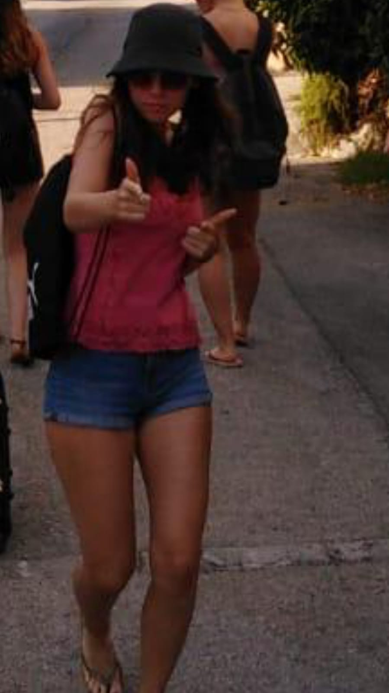
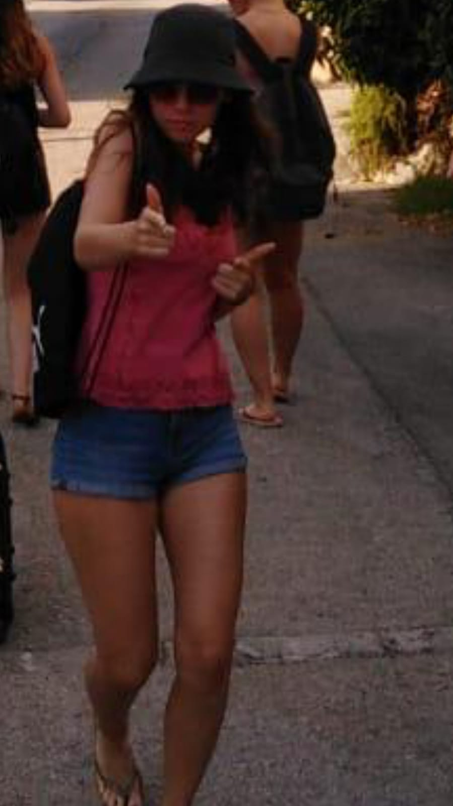

Hey, das bin Ich :)

Mein Name ist Laura Moser und ich bin 19 Jahre alt. Ich studiere Medieninformatik im 2 Semester in Furtwangen.
Hier geht es zu einem meiner Lieblingslieder, ziehs dir rein:
Fall Out Boy - I wanna dance with somebody

Mein Name ist Laura Moser und ich bin 19 Jahre alt. Ich studiere Medieninformatik im 2 Semester in Furtwangen.
Hier geht es zu einem meiner Lieblingslieder, ziehs dir rein:
Fall Out Boy - I wanna dance with somebody
